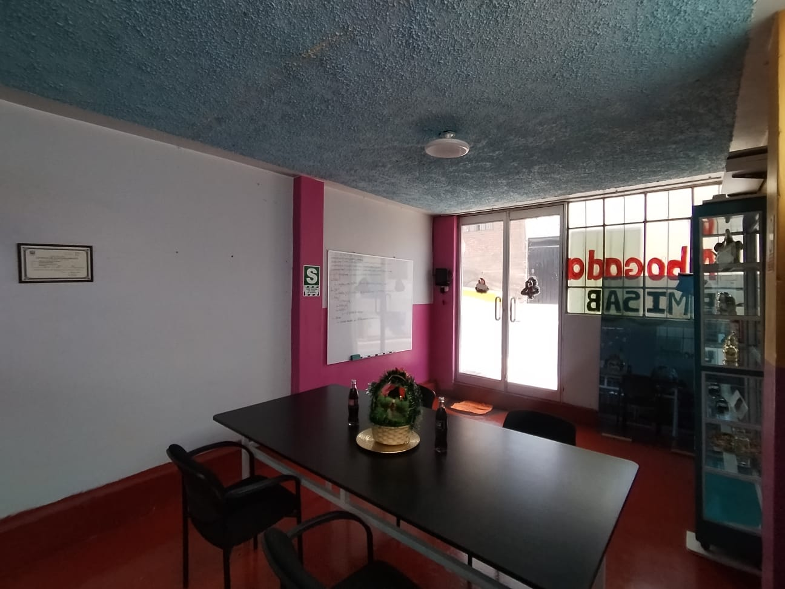
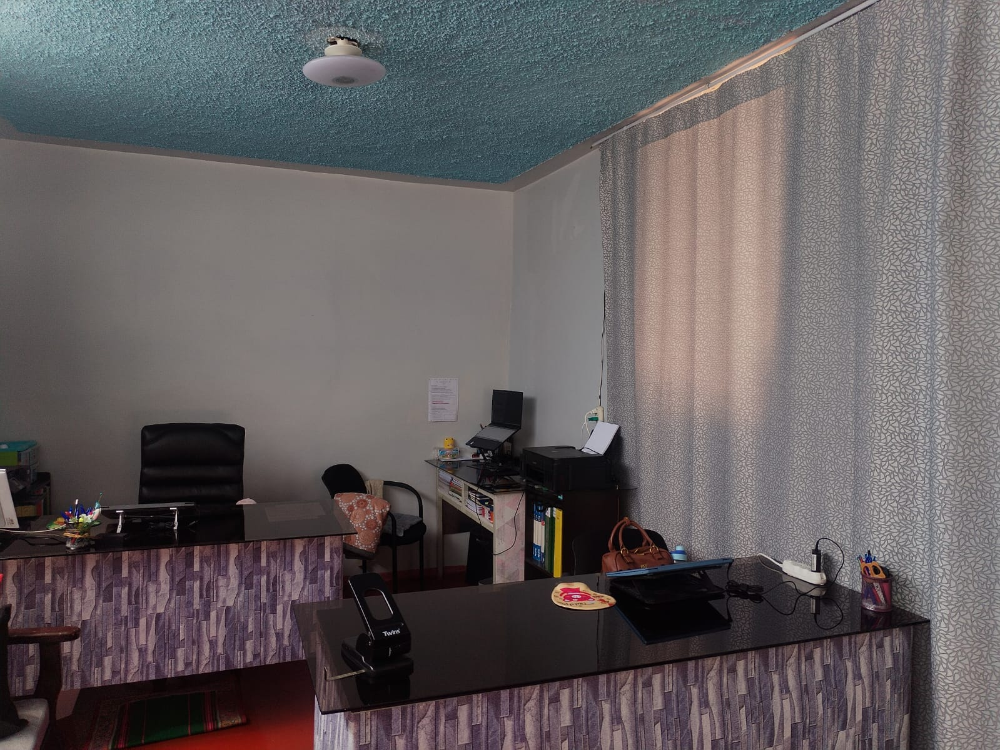
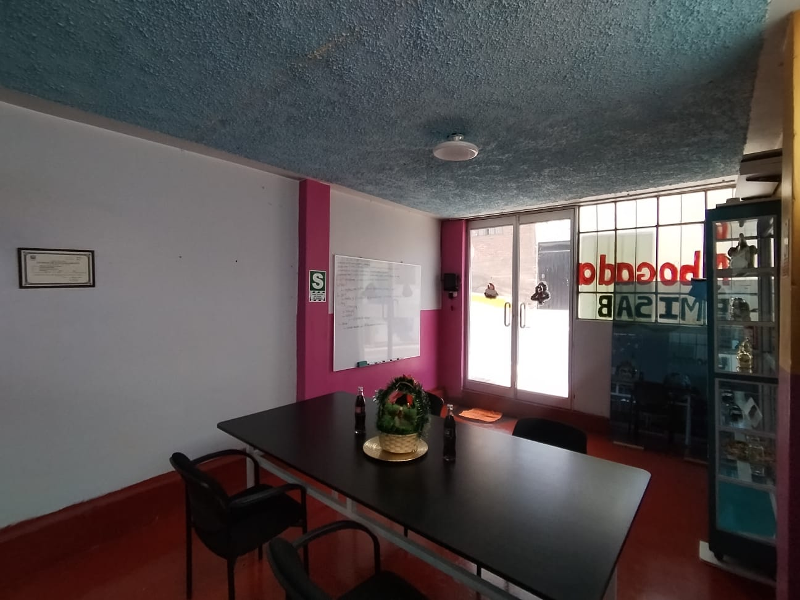
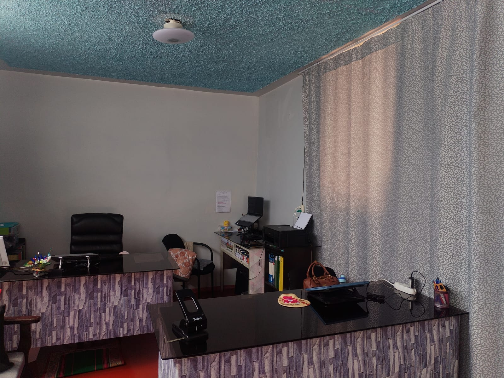

Quiénes somos
Facilitamos acuerdos claros y prácticos entre las partes, sin procesos judiciales largos.
Nuestro enfoque
En EMISAB buscamos soluciones rápidas y útiles. Organizamos sesiones de conciliación y arbitraje para que las partes lleguen a acuerdos concretos y con validez legal.
Misión y visión
Misión
Facilitar acuerdos prácticos y legales en conflictos familiares, civiles, laborales y empresariales.
Visión
Ser un centro confiable en Arequipa para resolver conflictos sin juicio, con atención presencial y/o virtual.
Equipo
Contamos con conciliadores, asesores legales y personal administrativo que acompañan cada proceso.
Instalaciones
Disponemos de ambientes cómodos y privados para reuniones, firma de actas y atención personalizada.
 



Preguntas frecuentes
¿Cuánto dura una sesión de conciliación?
Generalmente entre 1 y 2 horas, según la complejidad del caso.
¿Los acuerdos tienen validez legal?
Sí, las actas firmadas tienen el mismo valor que una sentencia judicial.
¿Qué pasa si la otra parte no asiste?
Se deja constancia en el acta y puedes usarla como prueba en un proceso judicial.
¿Cuánto cuesta el servicio?
Depende del tipo de caso. Informamos los costos antes de iniciar el proceso.
¿Necesito un abogado?
No es obligatorio, pero puedes contar con asesoría legal si lo prefieres.
Contacto
Redes y mensajería directa:
📲 WhatsApp